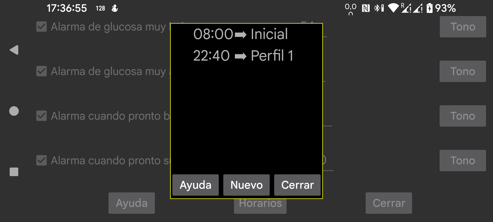

Permite hacer que un perfil determinado se active a una hora concreta del día. Pulsa Nuevo para crear una relación entre una hora y un perfil. Juggluco cambiará cada día a ese perfil a la hora indicada. Puedes editar una relación tocándola.
Todos los ajustes de Alarmas y Hablar son específicos de un perfil. El perfil activo se muestra en menú izquierdo → Ajustes → Alarmas y en menú central izquierdo → Hablar. Al principio el perfil es Predeterminado, pero puedes cambiarlo por Perfil 1, Perfil 2, etc. Todas las configuraciones de alarmas y de habla son específicas del perfil activo.
Algunos usuarios pensaron que solo se podía programar el cambio a un perfil, pero no su finalización. En realidad puedes añadir simplemente otro elemento que programe el regreso al perfil predeterminado, lo que equivale a indicar una hora de fin.